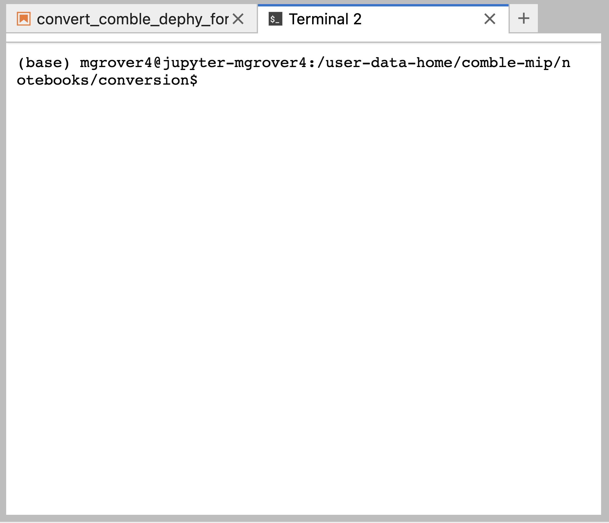

Contributers Guide#
Cloning Your Code#
The first step to contributing is clicking the rocket ship button in the top right part of the page, and selecting the “Launch on Jupyterhub” button.
For example, if you are running the “Convert DEPHY forcing to DHARMA and ModelE3 forcings” notebook, you see the following, selecting the “Launch on Jupyterhub” option.

After logging in using your ARM username/password, and selecting the “Enhanced Science Server”, you will launch into your computing environment, with the selected notebook open.

You have now cloned your code, creating a copy from the Github website, and placing on the ARM Jupyterhub environment.
Adding Your Changes#
Open a Terminal and Use Git Command Line Tools#
Once you run your notebooks, your data files will update and change. The best way to view these changes is to use the Github command line tools. You will need to open a terminal, using the button in the top left corner, as seen in the figure below, and select terminal.
Once you open a terminal, you will notice that you are in the same directory as the notebook you ran.

Move to a New Branch#
The first step when you have changes you would like to make to the repository is to create a new branch. This is to ensure your changes do not conflict with others.
Use the following line to create a new branch. You will need to choose a branch name (ex. add-new-file) that is suitable for your changes. This could be a model name, or something that describes what you changed compared to the data files already added to the project.
git checkout -b add-new-file
Add Your New File#
A good first step to determining which file needs or should be added is to run
git status
This will return which files have been edited or changed, as well as new files existing in the repository.
In our example, we see the the following:
On branch add-new-file
Changes not staged for commit:
(use "git add <file>..." to update what will be committed)
(use "git restore <file>..." to discard changes in working directory)
modified: convert_comble_dephy_forcing_to_DHARMA_LES_and_ModelE3_SCM_forcing.ipynb
Untracked files:
(use "git add <file>..." to include in what will be committed)
../forcing/COMBLE_INTERCOMPARISON_NUDGING_FORCING_NEW.nc
../forcing/COMBLE_INTERCOMPARISON_SFC_FORCING_ERA5ML_V1.6.nc
../forcing/COMBLE_INTERCOMPARISON_SFC_FORCING_NEW.nc
no changes added to commit (use "git add" and/or "git commit -a")
You will notice that we modified the convert_comble_dephy_forcing_to_DHARMA_LES_and_ModelE3_SCM_forcing.ipynb notebook. We can add add these changes using
git add convert_comble_dephy_forcing_to_DHARMA_LES_and_ModelE3_SCM_forcing.ipynb
Then commit our changes using
git commit -m 'update forcing notebook'
You have now added your changes on your local branch!
Pushing Your Changes#
Now that you have:
Cloned your code
Ran your notebooks with updated files
Created a new branch
Added and committed your changes
You are ready to push your changes to the main repository on Github (ARM-Development/comble-mip)
You will need to generate a personal access token and be added as a project contributor before pushing your change to Github
Follow these instructions to create your access token
E-mail tjuliano@ucar.edu and ann.fridlind@nasa.gov to be added as a project contributor
Once you have your token and have received and accepted your invitation as a project contributor on GitHub, you can run the following
git push
You will be prompted for your Github username and email. Add that information, rerun the git push command, and you will see the following:
fatal: The current branch add-new-file has no upstream branch.
To push the current branch and set the remote as upstream, use
git push --set-upstream origin add-new-file
Copy and paste that last line:
git push --set-upstream origin add-new-file
This will prompt you for username again, as well as your password. Use your newly created personal access token as the password.
See the image below which shows the expected prompt

You did it! This is the last step to pushing your changes.
Open a Pull Request#
Your next step is to go to the comble-mip repository on Github, and look at the top of the page. You should see a prompt suggesting that you open a pull request.

Select the “Compare and Pull Request” button, and add some additional information to the next page. You will want to add:
A helpful title describing what you are adding or changing
A detailed description of what you are trying to accomplish

Select “Create Pull Request” when you are ready.
You have opened a pull request! The project maintainers will provide feedback, and you have made your first contribution!
Suggested Resources#
We encourage you to check out the Project Pythia “Getting Started with Github” content if you would like more information about this contribution process and the concept of branches, pull requests, and contributions